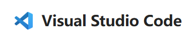
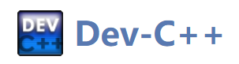
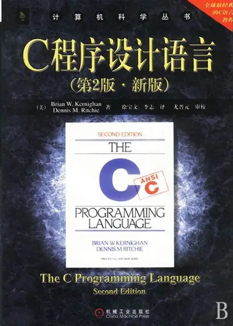
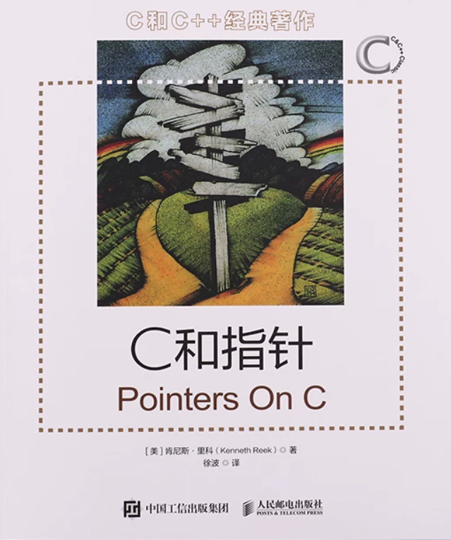

C 语言学习¶
C 语言是电控组的根基：STM32 固件、电机控制、操作系统内核全部用 C 编写，它也是入队培训的第一道门槛。本章不讲语法本身，而是把环境配置和资料选型一次说清。关于学习，建议控制在一个月以内，学习基本语法和各种C语言特性，包括但不限于指针，内存，结构体等等
学习任何一门编程语言，都是在项目中精进的，在实际问题中边解决问题边学习 ，光对着教程敲一百遍也很难掌握好，所以在教程学习了一段时间后，建议结合具体的小项目，在B站找具体的开源代码，到github上拉去一个项目看结构化的工程是如何编写的
关于 AI 辅助
学习阶段建议把 AI 编程工具仅当作辅助，甚至完全不用：每一行代码都要亲自敲。过度依赖 AI 会造成"能力错觉"——看似什么都能做，实际基础并没有掌握。C 语言作为最底层的基础，必须建立在自己的脑子里。
环境配置¶
- Visual Studio Code（简称VScode）— 前期学习推荐。轻量免费，装 C/C++ 插件 即可运行,后期还可以通过安装插件增加STM32等单片机开发能力。PS：注意区分VS Code 和 Visual Studio，VScode更轻量更易于扩展，Visual Studio集成开发环境更"重"目前暂不推荐

- dev c++ C语言初学阶段推荐，下载即用，不用配环境。
(31 封私信) 【2026最新】Dev C++下载安装保姆级教程（附安装包+图文步骤） - 知乎
Dev C++ 是一款 Windows 下的轻量级 C/C++ 集成开发环境（IDE），完全免费，装完就能直接写 main 函数并按 F9 编译运行，尤其适合学习 C/C++ 的新手小白。
Dev C++ 的优势是“一键即用”，安装包 40 MB 左右，启动快，自带编译器，中文错误提示。

- CLion — 后期涉及 CMake 组织的复杂工程时再换，学生认证可免费使用。
环境配置的教程请在B站搜索，跟着教程在Vscode或dev c++上敲出你的第一个C语言程序吧
有疑难杂症或者不懂得可以在培训群里面交流
教程推荐¶
这里仅列举教程，具体根据个人喜好，风格节奏。不要太纠结于谁的教程更好，任何一个知识点完善体系化不出错的教程都能使你受益匪浅
视频教程：¶
B 站搜索：C语言入门教程即可，任选一个播放量高、时长适中的系列跟完即可，不必纠结选哪个。
- 浙江大学 翁恺《C 语言》 — 大学公开课风格，讲解细致，适合喜欢课堂节奏的人。
- 黑马程序员C语言零基础入门到精通全套视频教程 — 适合跟着手把手敲，内容详细，风格看个人喜好
上述仅示例，具体看个人喜好
网页教程¶
这里推荐一个菜鸟教程 C 语言 — 篇幅短、只讲核心，适合快速入门或复习查阅。
书籍教程¶
- 《C 程序设计语言》（K&R）— C 语言设计者撰写，篇幅小、质量极高，建议作为入门书籍。

- 《C 和指针》— 指针与内存专题的经典黑皮书，把最难啃的部分单独讲透，后期学习推荐目前不必深入。

- 还有一本C primer plus，不过体量太大不建议拿来学习，可以当成字典查阅深入某一部分知识
电子版可通过 Zlibrary 获取（见"如何寻找资源"章）。
无论任何方式学习，比起高中拿笔记本记录知识点（当然不建议），这里更希望你能打开IDE一行一行的敲代码去理解
不懂的知识点可以尝试询问AI，但切记不要让AI帮你写代码！！！
查阅手册¶
- cppreference 中文站 — C/C++ 标准库权威参考，随用随查。
补充¶
关于学习程度，这里建议学到重点吃透指针与内存模型即可，同时，最好能补上一些计算机基础的相关知识，这里补上一些相关资料，后期学习过程建议观看，这一部分并不是重点，但对于你理解底层会很有帮助